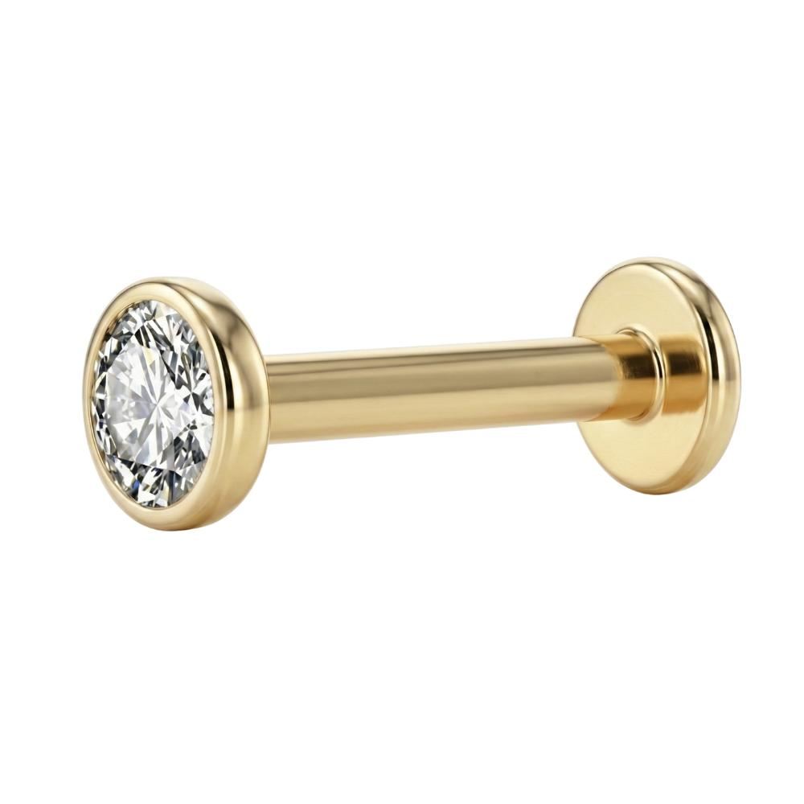
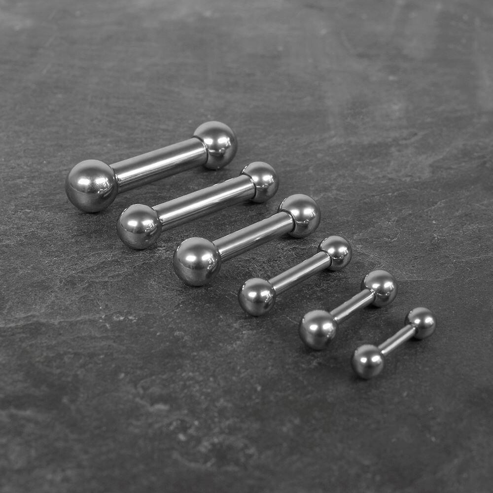
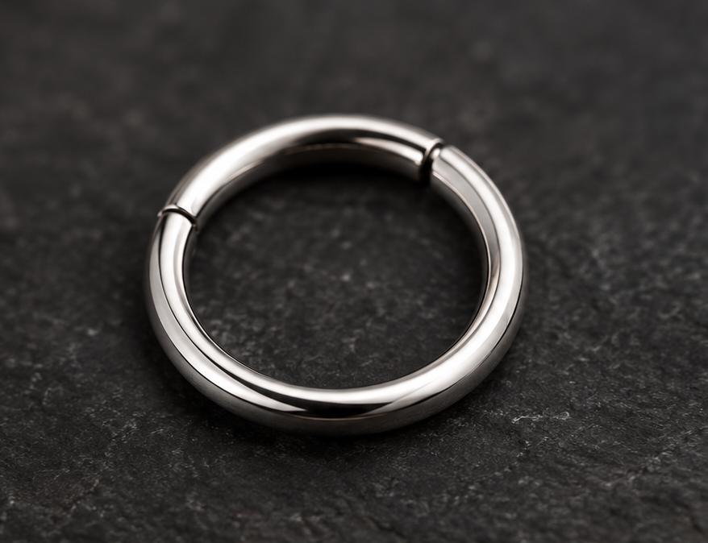
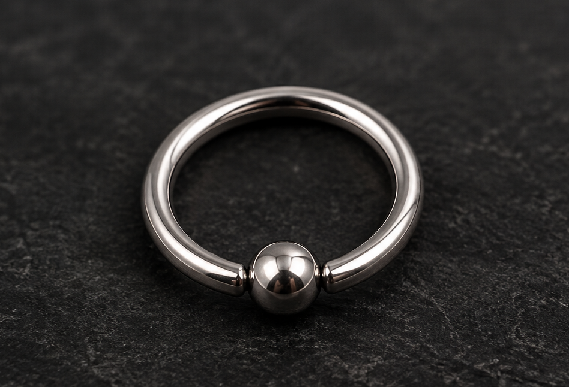

Labret
O Labret é uma joia de haste reta, com uma base plana na parte interna e uma extremidade decorativa. É bastante utilizado em perfurações como Helix, Tragus e Conch, desde que seja adequado à anatomia e à região perfurada.
STUDIO · TATTOO & PIERCING
No NOIR INK Studio, acreditamos que cada detalhe é uma forma de expressão. Oferecemos serviços de piercing com atenção, profissionalismo e cuidado em cada etapa, além de uma seleção de joias para complementar seu estilo. Nossa prioridade é proporcionar uma experiência segura, confortável e personalizada, acompanhando você desde a escolha da perfuração até as orientações de cuidados.
Perfuração localizada na borda superior da cartilagem da orelha.
Perfuração na pequena saliência de cartilagem próxima à entrada do ouvido.
Perfuração na região central da cartilagem da orelha, próxima à concha auricular.
Perfuração na dobra interna da cartilagem, logo acima da entrada do canal auditivo.
Perfuração realizada na lateral da narina, geralmente utilizada com joias delicadas.
Perfuração no tecido localizado entre as narinas, na região inferior do septo nasal.
Perfuração na parte macia e inferior da orelha, uma das opções mais tradicionais.
Perfuração geralmente realizada na região superior da borda do umbigo, utilizando joias próprias para essa área.

O Labret é uma joia de haste reta, com uma base plana na parte interna e uma extremidade decorativa. É bastante utilizado em perfurações como Helix, Tragus e Conch, desde que seja adequado à anatomia e à região perfurada.

O Barbell é uma joia composta por uma haste com extremidades decorativas, que podem ser removíveis. Está disponível em versões retas e curvas, sendo escolhido conforme a região da perfuração e as características anatômicas.

As argolas são joias circulares disponíveis em diferentes tamanhos e espessuras. Podem ser utilizadas em diversas perfurações, como Septum, Nostril e Lóbulo, conforme o modelo e a anatomia da região.

O Captive Bead Ring (CBR) é uma joia circular que utiliza uma pequena esfera para manter suas extremidades unidas. Está disponível em diferentes tamanhos e pode ser utilizado em algumas perfurações, dependendo da anatomia e das dimensões da joia.
Antes de realizar a perfuração, nosso profissional avalia a anatomia da região, verifica a viabilidade do procedimento e ajuda você a escolher a joia mais adequada.
O ambiente e os materiais são preparados seguindo protocolos de higiene e biossegurança. A joia e os materiais utilizados são selecionados conforme as necessidades do procedimento.
A perfuração é realizada por um profissional qualificado, utilizando materiais apropriados e técnicas adequadas. Após o procedimento, você recebe orientações sobre os cuidados necessários durante a cicatrização.
Escolha o piercing que combina com seu estilo e conte com nossa equipe para proporcionar uma experiência segura e personalizada. Entre em contato e agende seu atendimento!
Agendar meu piercing